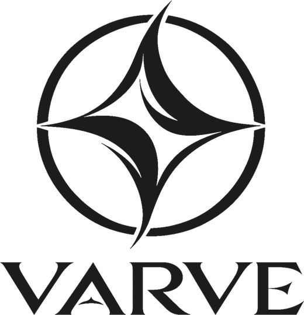

Testnet phase
Money built to outlast its cryptography
Varve is open-source proof-of-work money for the next hundred years: post-quantum signatures from the very first block, cryptography that can be upgraded without restarting the chain, and a launch so fair that not even its creator gets a head start.
Why Varve
Four ideas, built in from block one
- 01
Post-quantum from genesis
Every coin is protected by the new NIST standards ML-DSA (FIPS 204) and SLH-DSA (FIPS 205). There are no elliptic-curve coins to rescue later, because there never were any.
- 02
Cryptography that can evolve
Every output records which signature scheme protects it. New schemes can be added and weak ones retired by a planned upgrade, without a new coin or a restart.
- 03
Custody that outlives keys
Native timelocked recovery paths for inheritance, disaster recovery and cold storage, under an independent hash-based scheme. No smart-contract machinery required. After its delay a recovery key can move the coins on its own, so guard it as carefully as the main key.
- 04
Verifiable on a laptop
Block capacity is set by what an ordinary computer can check: the signatures in a worst-case full block verify in under 50 ms on one core, and in our battle test a full block was accepted end to end in under 0.1 s. Anyone can audit the whole chain.
Get started
Wallet, explorer and node
- WALLET
Strata
Hold, send and receive VARV with a desktop wallet that keeps your keys on your own computer, encrypted. For Windows, macOS and Linux.
- EXPLORER
Varvescan
Look up any block, transaction or address on the Varve blockchain, right in your browser. Nothing to install.
- NODE
Varve node
Run the network and mine VARV on an ordinary processor. Checks every block itself, no special hardware needed.
Progress
Built in the open, checked three ways
- Specification
- Normative documents for every consensus rule, P2P and wallets, with public decision records
- Implementations
- A prototype, an independent verifier written only from the spec, and the reference node agree on every consensus test vector
- Reference node
- Rust node, miner and wallet with no third-party Rust dependencies, tested on Linux and macOS, x86_64 and ARM64
- Testnet
- Genesis anchored to Bitcoin blocks 973,970–973,975; opens to public mining with its first seed node
- Battle tests
- Real nodes attacked with invalid blocks, double spends, chain rewrites, corrupted data and power cuts; the first run found two bugs, both fixed, and the second passed all 55 tests (results)
- Reviews
- An independent human review of the protocol and an AI-assisted review of the node code, every finding resolved or tracked in public audit records; a public, named security audit comes next
Design at a glance
Conservative where it matters, new where it counts
- Ledger
- UTXO with typed outputs; single key, or key plus timelocked recovery
- Signatures
- ML-DSA-65 primary, SLH-DSA-SHA2-128s recovery, SHA3-256 key commitments
- Proof of work
- RandomX v2 with a Varve-specific salt, so ordinary CPUs can mine
- Issuance
- 82 varve per block, smooth 8-year half-life, then from about year 30 a permanent tail of 6 varve per block (about 0.68% a year at first, shrinking every year after)
- Difficulty
- ASERT, adjusted every block; recovers from hashrate swings in hours
- Fair launch
- Genesis derived from six future Bitcoin blocks: no premine, no head start
Roadmap
Ten phases, each ending at a gate
- 00Existence testDone
- 01Architecture decisionsDone
- 02SpecificationIn progress
- 03Threat modelIn progress
- 04SimulationIn progress
- 05PrototypeIn progress
- 06Reference implementationIn progress
- 07TestnetsUpcoming
- 08Independent reviewUpcoming
- 09Fair launchUpcoming
Mainnet launches when the gates are met, not before: a public specification, adversarial testnets, and independent security review. Its genesis comes from six future Bitcoin blocks, so everyone starts at the same moment. See what is done and what is not.
From the journal
Latest update
Final hardening before the testnet
The last work before the testnet goes live was about making the whole structure tighter without slowing anything down.
Units
One varve, one hundred million laminae
1 varve = 100,000,000 laminaeticker VARV
A varve is a layer of sediment laid down once a year, year after year, for millennia: a record that is hard to fake and slow to build.